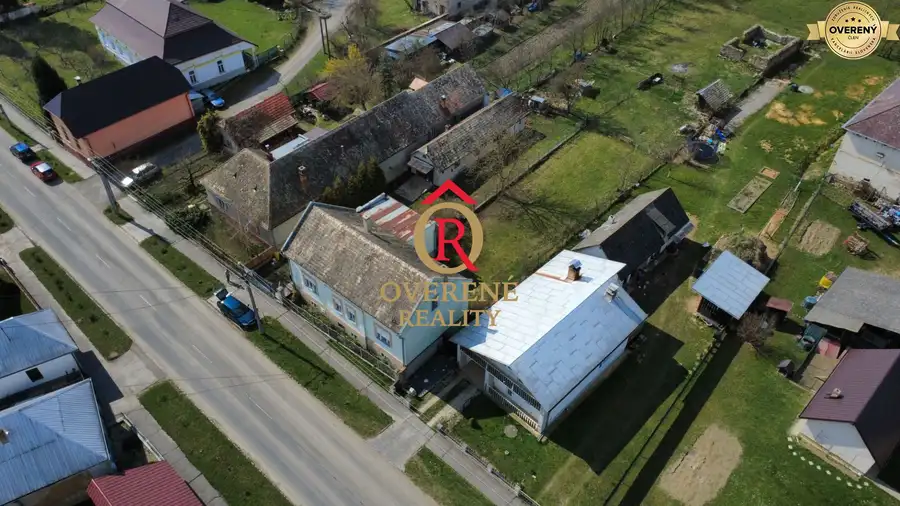
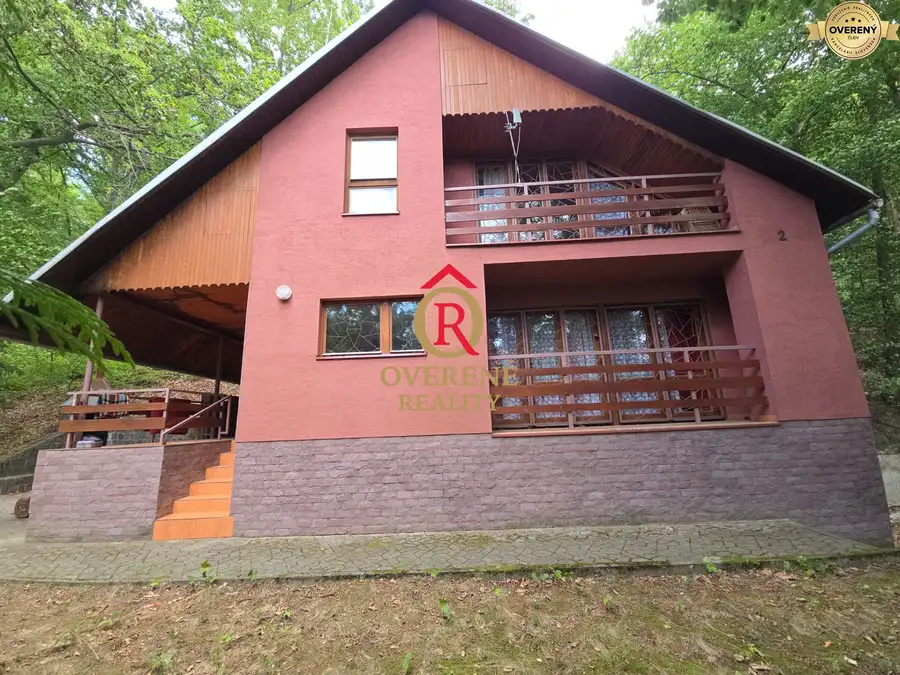
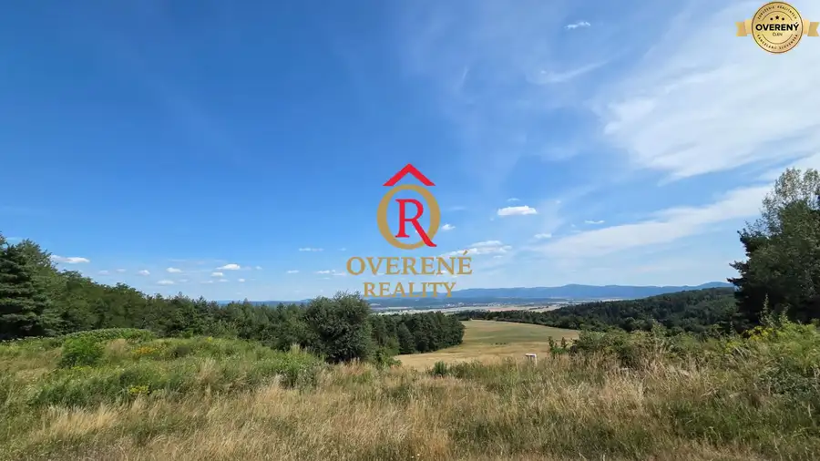
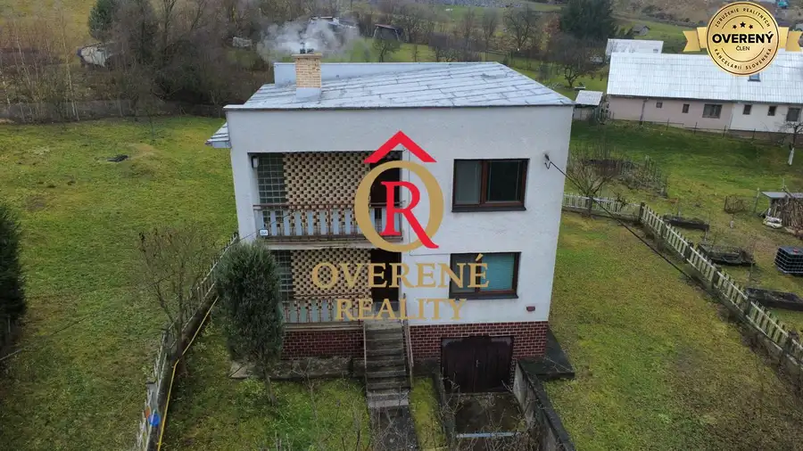

Aktuálna ponuka
Nehnuteľnosti, ktoré ponúkam
8 nehnuteľností na predaj a prenájom. Vyberte typ, alebo napíšte lokalitu.
8 z 8 ponúk
 Pozemok10
68 000 €Na predaj pozemok s projektom a sieťami pripravený na stavbu, Stožok
Stožok
1214 m²
Exkluzívne ponúkame na predaj stavebný pozemok v obci Stožok s rozlohou 1214m2, Parcela je priestranná mierne svahovitá, pripravená na výstavbu…
Pozemok10
68 000 €Na predaj pozemok s projektom a sieťami pripravený na stavbu, Stožok
Stožok
1214 m²
Exkluzívne ponúkame na predaj stavebný pozemok v obci Stožok s rozlohou 1214m2, Parcela je priestranná mierne svahovitá, pripravená na výstavbu…
 Byt10
139 000 €Na predaj veľký 5 izbový byt Lučenec centrum, 5B004JPh
Lučenec
5-izbový125 m²
Ponúkame na predaj priestranný atypický 5-izbový byt v centre mesta s celkovou rozlohou 140 m², z toho 15 m² tvorí pivnica. V budove, ktorá je…
Byt10
139 000 €Na predaj veľký 5 izbový byt Lučenec centrum, 5B004JPh
Lučenec
5-izbový125 m²
Ponúkame na predaj priestranný atypický 5-izbový byt v centre mesta s celkovou rozlohou 140 m², z toho 15 m² tvorí pivnica. V budove, ktorá je…
 Chaty a chalupy10
206 168 €Na predaj rekreačná chalupa - Látky, Podpoľanie - 6RD007JPh
Látky
101 m²
OVERENÉ REALITY exkluzívne ponúkajú na predaj rodinnú chalupu v nádhernom prostredí Podpoľania lokalita Látky. Poschodový drevodom s plochou 101 m²…
Chaty a chalupy10
206 168 €Na predaj rekreačná chalupa - Látky, Podpoľanie - 6RD007JPh
Látky
101 m²
OVERENÉ REALITY exkluzívne ponúkajú na predaj rodinnú chalupu v nádhernom prostredí Podpoľania lokalita Látky. Poschodový drevodom s plochou 101 m²…
 Pozemok4
74 256 €Na predaj poľnohospodárska pôda - Stožok P014JP
Stožok
4368 m²
Overené Reality exkluzívne ponúkajú na predaj rovinatý a slnečný pozemok s celkovou výmerou 4 368 m² v obci Stožok, nachádzajúci sa v bezprostrednej…
Pozemok4
74 256 €Na predaj poľnohospodárska pôda - Stožok P014JP
Stožok
4368 m²
Overené Reality exkluzívne ponúkajú na predaj rovinatý a slnečný pozemok s celkovou výmerou 4 368 m² v obci Stožok, nachádzajúci sa v bezprostrednej…

Rodinné domy10 70 000 €Na predaj rodinný dom s veľkým pozemkom v obci Rovňany/okres Poltár Rovňany 150 m² OVERENÉ REALITY ponúkajú na predaj v obci Rovňany rodinný dom v tichej lokalite s úžitkovou plochou 150m2 a rovinatý pozemok s veľkým potenciálom a…
Chaty a chalupy10 166 000 €Rekreačný dom pri vode - Ružiná - 4RD018JP Ružiná 4-izbový160 m² OVERENÉ REALITY ponúkajú na predaj rekreačnú nehnuteľnosť v bezprostrednej blízkosti vodnej nádrže Ružiná. Zateplený tehlový dom sa nachádza v…
Pozemok10 112 500 €NÍZKA CENA/ŽIADANÁ LOKALITA Predaj stavebného pozemku Badín -P019JP Badín 752 m² OVERENÉ REALITY ponúkajú na predaj atraktívny koncový stavebný pozemok s výmerou 752 m² v obľúbenej obci Badín, ktorý zaujme nádherným panoramatickým…
Rodinné domyPredané10 PredanéNa predaj rodinný dom pri Banskej Štiavnici Banská Belá 271 m² ! Predané ! Overené Reality exkluzívne ponúkajú na predaj rodinný dom s veľkým pozemkom v atraktívnej lokalite Štiavnicka. Veľkorysý pozemok s…Tomuto výberu zatiaľ nezodpovedá žiadna ponuka. Napíšte mi, čo hľadáte.